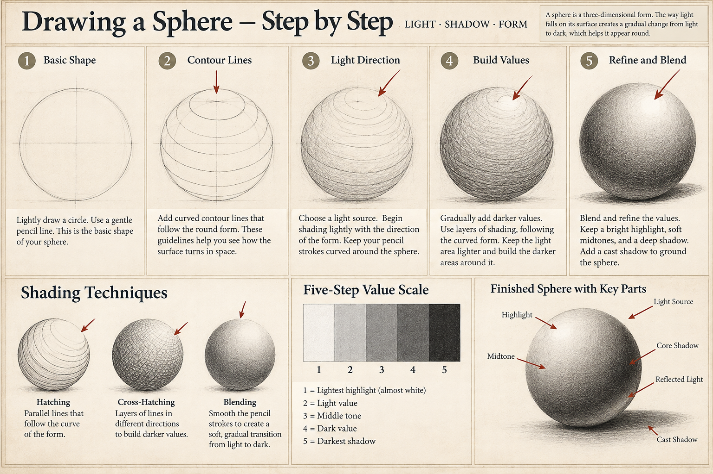

Observe
Place a simple object beside one lamp or a window. Identify the light direction and the brightest and darkest visible regions.
KHAEMENES ACADEMY · ART 101 · UNIT 02
Light direction · Five-step grayscale · Shading
ART 101 · UNIT 02 · WEEK 04
How can light and shadow make a two-dimensional drawing communicate volume?
Open one stage at a time. The original demonstration, interactive laboratory, assignment, evidence tools and assessment remain below.
Place a sphere or rounded household object beside one stable light source. Draw five distinct value swatches, from paper white to your darkest available tone. Identify the light-facing area, halftone, core shadow, reflected light when visible, and cast shadow. Keep the cast-shadow direction consistent with the observed light; avoid outlining every value boundary.
Investigate a museum-documented drawing, painting, or print in which light establishes form. Identify one observable highlight-to-shadow transition and explain how it affects the viewer's perception. Cite creator, title, date or period, medium, collection, and source; avoid treating uncertain lighting interpretations as established fact.
Use an institutional catalog or credible publication; credit sources and respect image-reuse rights.
Create a five-step value scale, two small lighting studies, and one finished tonal drawing from observation. Photograph or preserve the actual setup if possible. Revise one value relationship, retain both versions, and explain the evidence for the change.
Use physical materials or an appropriate digital medium. Original physical work should be retained even if a digital record is created.
Use the existing 100-point reviewer rubric and Academic Evidence record below. Check these dimensions: Distinct value structure; Observed light consistency; Revision and evidence.
Emerging: limited observational evidence. Developing: partial evidence and basic revision. Proficient: complete, accurate studies with explained revision. Advanced: multiple controlled comparisons, precise reasoning and a clear next investigation.
These descriptors are formative. The standalone page cannot certify the Academy's 80% mastery requirement.
How do artists use value to make flat marks describe three-dimensional form?
Value means relative lightness or darkness. A value scale organizes tones from light to dark. Highlights receive the strongest light, core shadows describe turning form, and cast shadows fall on nearby surfaces when light is blocked.
Place a simple object beside one lamp or a window. Identify the light direction and the brightest and darkest visible regions.
Make a five-step pencil value scale, keeping the steps distinct. Compare hatching, cross-hatching, and layered shading.
Use your scale to shade a sphere or other rounded object, then revise the transition between light and shadow.
Follow this original five-stage demonstration from a light construction circle to a fully modeled sphere. Compare hatching, cross-hatching, blending, the five-value scale, and the finished sphere’s highlight, core shadow, reflected light, and cast shadow.

Value 1 is the lightest and value 5 is the darkest. The sphere's surface changes gradually; its cast shadow is a separate effect. This is a model for observation, not a universal placement of shadows.
A pencil and paper are sufficient. Do not use unsafe lamps or look directly at strong light sources.
Set the grayscale intensity of each step. Aim for a smooth sequence from light to dark with five clearly distinguishable values.
Five questions are selected from fifteen original questions, with randomized answer order. Four correct is the 80% formative practice target only. Answers lock after submission; fresh retakes are available. This does not certify studio evidence or authorize Academy progression.
Preserve your studies and final drawing in your physical portfolio. This local record supports reflection but does not submit work or award an Academy grade.
Observation of light direction (25); five-step value scale (20); controlled shading and form (20); revision and technique (15); written analysis (15); archival labels (5).
The proposed mastery threshold is 80%, subject to an authorized reviewer. The practice check and browser-local evidence do not establish certified mastery.
You've studied contour, proportion, and value. Next, investigate how hue, value, and saturation shape visual meaning.
Begin Week 05 · Hue, Value and Saturation